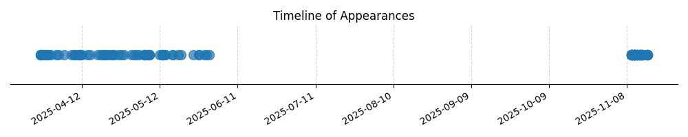

Kategorie: Meteorologie
Tato otázka se týká chování větru ve vztahu k nadmořské výšce, což je základní koncept meteorologie. V blízkosti země (v takzvané třecí vrstvě, obvykle do výšky 1000-2000 stop AGL) je směr a rychlost větru ovlivněna povrchovým třením. Tření zpomaluje vítr, což oslabuje Coriolisovu sílu (která na severní polokouli stáčí proudění doprava). V důsledku toho se vítr u země odklání od směru izobar a proudí s určitým úhlem směrem k nízkému tlaku. Jak se postupuje vzhůru od země, vliv tření se zmenšuje. Rychlost větru se zvyšuje a Coriolisova síla se stává dominantnější. To způsobí, že se směr větru postupně stáčí doprava (veers, ve směru hodinových ručiček), dokud se nad třecí vrstvou (kde je síla tření zanedbatelná) téměř nevyrovná se směrem izobar (geostrofický vítr), přičemž nízký tlak je po jeho levici. Správná odpověď B tedy odráží toto stáčení doprava při stoupání na severní polokouli.

| Datum výskytu |
|---|
| 2025-11-16 |
| 2025-11-15 |
| 2025-11-14 |
| 2025-11-13 |
| 2025-11-12 |
| 2025-11-11 |
| 2025-11-10 |
| 2025-05-31 |
| 2025-05-30 |
| 2025-05-29 |
| 2025-05-27 |
| 2025-05-25 |
| 2025-05-20 |
| 2025-05-19 |
| 2025-05-17 |
| 2025-05-14 |
| 2025-05-13 |
| 2025-05-12 |
| 2025-05-08 |
| 2025-05-07 |
| 2025-05-06 |
| 2025-05-04 |
| 2025-05-03 |
| 2025-05-02 |
| 2025-05-01 |
| 2025-04-28 |
| 2025-04-27 |
| 2025-04-26 |
| 2025-04-24 |
| 2025-04-23 |
| 2025-04-22 |
| 2025-04-21 |
| 2025-04-20 |
| 2025-04-19 |
| 2025-04-18 |
| 2025-04-15 |
| 2025-04-14 |
| 2025-04-12 |
| 2025-04-11 |
| 2025-04-10 |
| 2025-04-09 |
| 2025-04-08 |
| 2025-04-05 |
| 2025-04-03 |
| 2025-04-02 |
| 2025-03-31 |
| 2025-03-30 |
| 2025-03-29 |
| 2025-03-28 |
| 2025-03-27 |